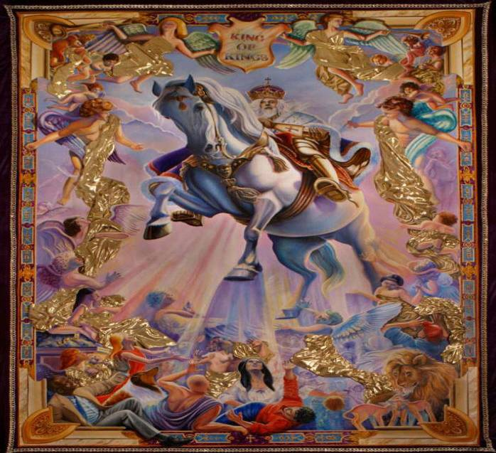
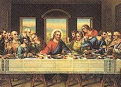
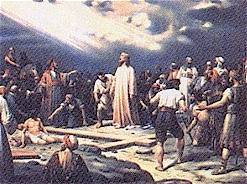

Jesus Christ
This page is dedicated
to Jesus Christ, God's son, and man's Savior
Please take the time to get to know Jesus Christ, and accept him as your personal savior.
Synopsis
Jesus Christ was born in 2-6 BCE in Bethlehem, Judea. Little is known
about his early life, but as a young man, he founded Christianity, one of the
world’s most influential religions. His life is recorded in the New Testament,
more a theological document than a biography. According to Christians, Jesus is
considered the incarnation of God and his teachings an example for living a
more spiritual life. Christians believe he died for the sins of all people and
rose from the dead.

Quotes
Do not think that I am come to destroy the law, or
the prophets. I am not come to destroy, but to fulfill.
– Jesus Christ
Profile
Most of Jesus’ life is told through the four Gospels of the New
Testament Bible, known as the Canonical gospels, written by Matthew, Mark, Luke
and John. These are not biographies in the modern sense but accounts with
allegorical intent. They are written to engender faith in Jesus as the Messiah
and the incarnation of God, who came to teach, suffer and die for people’s
sins.
Jesus was born between 2 and 6 BCE, in Bethlehem, Judea. His mother,
Mary, was a virgin who was betrothed to Joseph, a carpenter. Christians believe
Jesus was born through Immaculate Conception. His lineage can be traced back to
the house of David. According to the Gospel of Matthew (2:1), Jesus was born
during the reign of Herod the Great, who upon hearing of his birth felt
threatened and tried to kill Jesus by ordering all of Bethlehem’s male children
under age two to be killed. But Joseph was warned by an angel and took Mary and
the child to Egypt until Herod’s death, where upon he brought the family back
and settled in the town of Nazareth, in Galilee.

There is very little written about Jesus’ early life. The Gospel of
Luke (2:41-52) recounts that a 12-year-old Jesus had accompanied his parents on
a pilgrimage to Jerusalem and became separated. He was found several days later
in a temple, discussing affairs with some of Jerusalem’s elders. Throughout the
New Testament, there are trace references of Jesus working as a carpenter while
a young adult. It is believed that he began his ministry at age 30 when he was
baptized by John the Baptist, who upon seeing Jesus, declared him the Son of
God.
After baptism, Jesus went into the Judean desert to fast and meditate
for 40 days and nights. The Temptation of Christ is chronicled in the Gospels
of Matthew, Mark and Luke (known as the Synoptic Gospels). The Devil appeared
and tempted Jesus three times, once to turn stone to bread, once to cast
himself off a mountain where angels would save him, and once to offer him all
the kingdoms of the world. All three times, Jesus rejected the Devil’s
temptation and sent him off.

Jesus returned to Galilee and made trips to neighboring villages.
During this time several people became his disciples. One of these was Mary Magdalene, who is first
mentioned the Gospel of Luke (16:9) and later in all four gospels at the
crucifixion. Though not mentioned in the context of the “12 disciples,” she is
considered to have been involved in Jesus’ ministry from the beginning to his
death and after. According to the gospels of Mark and John, Jesus appeared to
Magdalene first after his resurrection.

According to the Gospel of John (2:1-11), as Jesus was beginning his
ministry, he and his disciples traveled with his mother, Mary, to a wedding at
Cana in Galilee. The wedding host had run out of wine and Jesus’ mother came to
him for help. At first, Jesus refused to intervene, but then he relented and
asked a servant to bring him large jars filled with water. He turned the water
into a wine of higher quality than any served during the wedding. John’s gospel
depicts the event as the first sign of Jesus’ glory and his disciples’ belief
in him.

After the wedding, Jesus, his mother Mary and his disciples traveled to
Jerusalem for Passover. At the temple, they saw moneychangers and merchants
selling wares. In a rare display of anger, Jesus overturned the tables and,
with a whip made of cords, drove them out, declaring that his Father’s house is
not a house for merchants.

The Synoptic Gospels chronicle Jesus as he traveled through Judea and
Galilee, using parables and miracles to explain how the prophecies were being
fulfilled and that the kingdom of God was near. As word spread of Jesus’
teaching and healing the sick and diseased, more people began to follow him. At
one point, Jesus came to a level area and was joined by a great number of
people. There, at the Sermon on the Mount, he presented several discourses,
known as the Beatitudes, which encapsulate many of the spiritual teachings of
love, humility and compassion.

As Jesus continued preaching about the kingdom of God, the crowds grew
larger and began to proclaim him as the son of David and as the Messiah. The
Pharisees heard of this and publicly challenged Jesus, accusing him of having
the power of Satan. He defended his actions with a parable, then questioned
their logic and told them such thinking denied the power of God, which only
further hardened their resolve to work against him.

Near the city of Caesarea Philippi, Jesus talked with his disciples.
According to the gospels of Matthew (16:13), Mark (8:27) and Luke (9:18), he
asked, “Who do you say that I am?” The question confused them, and only Peter
responded, saying, “You are the Christ, the Son of the living God.” Jesus
blessed Peter, accepting the titles of “Christ” and the “Son of God,” and
declared the proclamation was a divine revelation from God. Jesus then
proclaimed Peter to be the leader of the church. Jesus then warned his
disciples of the Pharisees’ conspiracy against him and of his fate to suffer
and be killed, only to rise from the dead on the third day.

Less than a week later, Jesus took three of his disciples to a high
mountain where they could pray alone. According to the Synoptic Gospels, Jesus’
face began shining like the sun and his entire body glowed with a white light. Then,
the prophets Elijah and Moses appeared, and Jesus talked to them. A bright
cloud emerged around them, and a voice said, “This is my beloved Son, with whom
I am well pleased; listen to him.” This event, known as the Transfiguration, is
a pivotal moment in Christian theology. It supports the identity of Jesus as
the Christ, the Son of the living God.
Jesus arrived in Jerusalem, the week before the holiday of Passover,
riding on a donkey. Great numbers of people took palm branches and greeted him
at the city’s entry. They praised him as the Son of David and as the Son of
God. The priests and Pharisees, fearful of the growing public adulation, felt
he must be stopped.

All four Gospels describe Jesus’ final week in Jerusalem. During this
time, Jesus raised Lazarus from the dead, confronted moneychangers and
merchants in the temple, and debated with the high priests who questioned
Jesus’ authority. He told his disciples about the coming days and that
Jerusalem’s temple would be destroyed. Meanwhile, the chief priests and elders
met with high priest Caiaphas, and set plans in motion to arrest Jesus. One of
the disciples, Judas, met with the chief priests and told them how he would
deliver Jesus to them. They agreed to pay him 30 pieces of silver.

Jesus and his 12 disciples met for the Passover meal, and he gave them
his final words of faith. He also foretold of his betrayal by one of the
disciples and privately let Judas know it was he. Jesus told Peter that before
a rooster crowed the next morning, three times he will have denied he knows
Jesus. At the end of the meal, Jesus instituted the Eucharist, which in the
Christian religion, signifies the covenant between God and humans.

After the Last Supper, Jesus and his disciples went to the Garden of
Gethsemane to pray. Jesus asked God if this cup (his suffering and death) might
pass by him. He implored a group of his disciples to pray with him, but they
kept falling asleep. Then the time had come. Soldiers and officials appeared,
and Judas was with them. He gave Jesus a kiss on the cheek to identify him and
the soldiers arrested Jesus. One disciple tried to resist the arrest,
brandished his sword and cut the ear off one of the soldiers. But Jesus
admonished him and healed the soldier’s wound.

After his arrest, many of the disciples went into hiding. Jesus was
taken to the high priest and interrogated. He was hit and spat upon for not
responding. Meanwhile, Peter had followed Jesus to the high priests’ court. As
he hid in the shadows, three house servants asked if he was one of Jesus’
disciples and each time he denied it. After each denial, a rooster crowed. Then
Jesus was led out of the house and looked directly at Peter. Peter remembered
how Jesus had told him he would deny him and he wept bitterly. Judas, who was
watching from a distance, became distraught by his betrayal of Jesus and
attempted to return the 30 pieces of silver. The priests told him his guilt was
his own. He threw the coins into the temple and later hanged himself.

The next day, Jesus was taken to the high court where he was mocked,
beaten and condemned for claiming to be the Son of God. He was brought before Pontius Pilate, the Roman governor of
Judea. The priests accused Jesus of claiming to be the King of the Jews and
asked that he be condemned to death. At first Pilate tried to pass Jesus off to
King Herod, but he was brought back, and Pilate told the Jewish priests he
could find no fault with Jesus. The priests reminded him that anyone who
claimed to be a king speaks against Caesar. Pilate publicly washed his hands of
responsibility, yet ordered the crucifixion in response to the demands of the
crowd. The Roman soldiers whipped and beat Jesus, placed a crown of thorns on
his head and then led him off to Mount Calvary.

Jesus was crucified with two thieves, one at his left and the other at
his right. Above his head was the charge against him, “King of the Jews.” At
his feet were his mother, Mary, and Mary Magdalene. The Gospels describe
various events that occurred during the last three hours of his life, including
the taunting by the soldiers and the crowd, Jesus’ agony and outbursts, and his
final words. While he was on the cross, the sky darkened, and immediately upon
his death an earthquake erupted, tearing the temple’s curtain from top to
bottom. A soldier confirmed his death by sticking a spear into his side, which
produced only water. He was taken down from the cross and buried in a nearby
tomb.
Three days after his death, Jesus’ tomb was found empty. He had risen
from the dead and appeared first to Mary Magdalene and then to his mother Mary.
They both informed the disciples, who were in hiding, and later, Jesus appeared
to them and told them not to be afraid. During this brief time, he beseeched
his disciples to go into the world and preach the gospel to all humanity. After
40 days, Jesus led his disciples to Mount Olivet, east of Jerusalem. Jesus
spoke his final words to them, saying they would receive the power of the Holy
Spirit. Then Jesus was taken upward on a cloud and ascended into heaven.

Credit to: A&E Networks for text of article.
How to Be Saved and Go to
Heaven
According to the Word of God
It
is very simple to be saved and takes only a minute to explain. Please let me
show you how to get to Heaven from the Bible, God's Word...
Man is a sinner.
· Isaiah 53:6, “All we like sheep have gone astray; we have turned every one to his own way; and the LORD hath laid on him the iniquity of us all.”
· John 3:3, “Jesus answered and said unto him, Verily, verily, I say unto thee, Except a man be born again, he cannot see the kingdom of God.”
· Romans 3:10, “As it is written, There is none righteous, no, not one.”
· Romans 3:23, “For all have sinned, and come short of the glory of God.”
·

There is a price on our sin―eternal death in Hell.
· Romans 6:23, “For the wages of sin is death; but the gift of God is eternal life through Jesus Christ our Lord.”
· Romans 5:12, “Wherefore, as by one man sin entered into the world, and death by sin; and so death passed upon all men, for that all have sinned.”
·
· 2nd Thessalonians 1:8, “In flaming fire taking vengeance on them that know not God, and that obey not the gospel of our Lord Jesus Christ.”
· Revelation 20:15, "And whosoever was not found written in the book of life was cast into the lake of fire.”
· Revelation 21:8, “But the fearful, and unbelieving, and the abominable, and murderers, and whoremongers, and sorcerers, and idolaters, and all liars, shall have their part in the lake which burneth with fire and brimstone: which is the second death.”
·

Jesus paid that price by dying on the cross and shedding His blood; Christ was buried and rose again!
· Romans 5:8, “But God commendeth his love toward us, in that, while we were yet sinners, Christ died for us.”
· John 3:16, “For God so loved the world, that he gave his only begotten Son, that whosoever believeth in him should not perish, but have everlasting life.”
· 1st Timothy 1:15, “This is a faithful saying, and worthy of all acceptation, that Christ Jesus came into the world to save sinners; of whom I am chief.”
· 1st Peter 1:18-19, “Forasmuch as ye know that ye were not redeemed with corruptible things, as silver and gold, from your vain conversation received by tradition from your fathers; But with the precious blood of Christ...”
·

· 1st Corinthians 15:1-4, “Moreover, brethren, I declare unto you the gospel which I preached unto you, which also ye have received, and wherein ye stand; By which also ye are saved, if ye keep in memory what I preached unto you, unless ye have believed in vain. For I delivered unto you first of all that which I also received, how that Christ died for our sins according to the scriptures; And that he was buried, and that he rose again the third day according to the scriptures.”
By faith in Jesus Christ ALONE we can be saved.

Salvation is NOT found in a religion or good works, but in a Person... The LORD JESUS CHRIST!
· John 11:25, “Jesus said unto her, I am the resurrection, and the life: he that believeth in me, though he were dead, yet shall he live.”
· John 14:6, “Jesus saith unto him, I am the way, the truth, and the life: no man cometh unto the Father, but by me.”
· John 6:40, “And this is the will of him that sent me, that every one which seeth the Son, and believeth on him, may have everlasting life: and I will raise him up at the last day.”
· Mark 1:15, “And saying, The time is fulfilled, and the kingdom of God is at hand: repent ye, and believe the gospel.”
· Acts 26:18, “To open their eyes, and to turn them from darkness to light, and from the power of Satan unto God, that they may receive forgiveness of sins, and inheritance among them which are sanctified by faith that is in me.”
· Romans 10:13, “For whosoever shall call upon the name of the Lord shall be saved.”
· 1st Corinthians 3:11, "For other foundation can no man lay than that is laid, which is Jesus Christ.”
·
Galatians
3:26, “For ye are all the children of God by faith in Christ Jesus.”
·
HERE IS HOW YOU CALL UPON
THE LORD
Do you admit that you are a GUILTY sinner, under the condemnation of God's LAW, deserving of Hellfire?
Do you believe that Jesus is the Son of God (God in the flesh) who died upon the cross, sacrificing His precious blood to pay for your sins? Do you believe that Jesus was buried and rose again three days later?
That is the good news of the gospel... Jesus DIED, He was BURIED and He is RISEN!
If you'd like to be saved, simply come in your heart as a guilty sinner and BELIEVE upon the Lord Jesus Christ.
Perhaps
you'd feel comfortable praying a sinner's prayer as did the publican in Luke
18:13... “And the publican, standing afar off, would not lift up so much as
his eyes unto Heaven, but smote upon his breast, saying, God be merciful to me
a sinner.”

Dear Jesus,
I admit that I am a sinner deserving of Hell. I believe that you died, were
buried and rose again. Please forgive me of my sins and take me to Heaven when
I die. I now believe upon You alone, apart from all self-righteous works and
religion, as my personal Savior. Thank you. Amen.
Just as you were born physically to your parents, so you were born spiritually into the Family of God when you received Jesus! Please understand that we are not saved because we pray a prayer; but because we believe upon the Lord Jesus Christ. It is certainly appropriate to ask the Lord in prayer to forgive and save us; but it is our faith which prompts us to pray. You could just as easily believe in your heart upon the Lord to be saved, and not pray at all. Salvation is of the heart, as we read in Romans 10:10, “For with the heart man believeth unto righteousness...”
It's not what you're doing that gets you to Heaven, it's where you're looking. Look to Jesus!
You do NOT have to be water baptized nor doing anything to get to Heaven other than trust upon the Lord as your Savior. Romans 4:5 proclaims... “But to him that worketh not, but believeth on Him (Jesus) that justifieth the ungodly, his faith is counted for righteousness.” What a wonderful truth! Our faith is COUNTED for righteousness! There is NO self-righteousness involved in salvation. It is the gift of God. You see, we have no righteousness of our own to offer God. No amount of good can undo the bad we've done. Thus, Jesus paid a debt that He did not owe, because we owed a debt that we could not pay. Salvation is receiving, not giving. We are Sinners and Jesus is the Savior. Jesus is precious!
Unbelief is the only sin which can keep you out of Heaven.
Just take God at His word and claim His salvation by faith. Believe, and you will be saved. No church, no lodge, no good works can save you. Remember, God does the saving. All of it!
Trusting
Jesus is meaningless without the cross. You must believe that Jesus died, was
buried and rose again. 1st Corinthians 15:1-4 teaches that the gospel is the
death, burial and resurrection of the Lord Jesus Christ.
God's simple plan of salvation is: You are a sinner. Therefore, unless you believe on Jesus Who died in your place, you will spend eternity in Hell. If you believe on Him as your crucified, buried, and risen Savior, you receive forgiveness for all of your sins and His gift of eternal salvation by faith.
You say, “Surely, it cannot be that simple!” Yes, that simple. It is scriptural; it is God's plan. My friend, believe on Jesus and receive Him as Savior today.
If you've never been saved, then now is the time to believe upon the name of Jesus, the Christ, that your sins will be blotted out forever and you can know that your name is written in Heaven.
Christ died for your sins. You are a sinner by nature and by choice. Jesus took your sins and charged them to His own record. He went to the cross and paid the penalty for your sins. He says if you're willing to receive Him in faith; He will transfer His payment to your debt, and His righteousness to your sins. He will impute to you His goodness, and impute to His own record your sin; if you in faith will trust Him as your Savior.
Romans 8:34, “Who is he that condemneth? It is Christ that died, yea rather, that is risen again, who is even at the right hand of God, who also maketh intercession for us.”
Kindest regards,
David J. Stewart
You Need HIS RIGHTEOUSNESS!